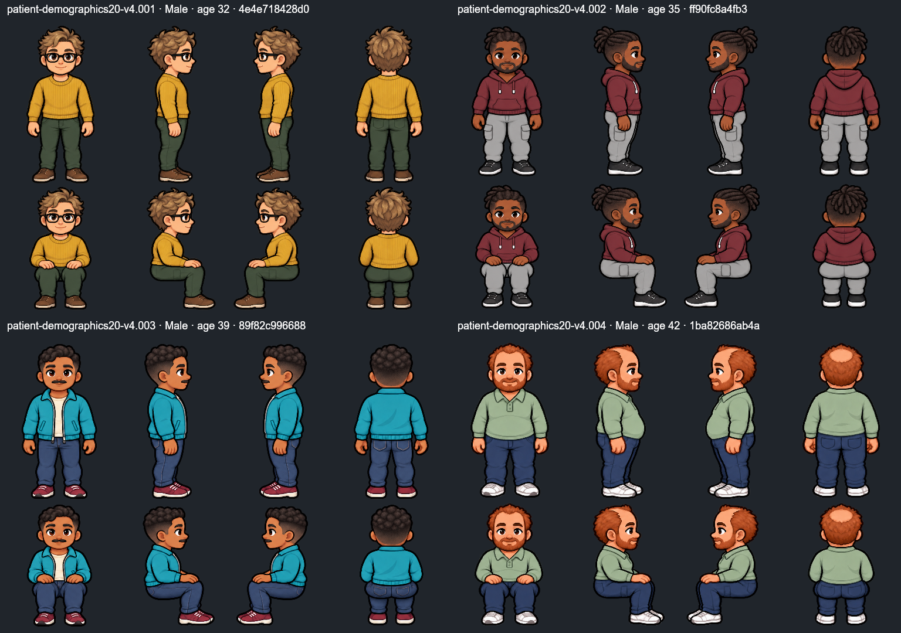
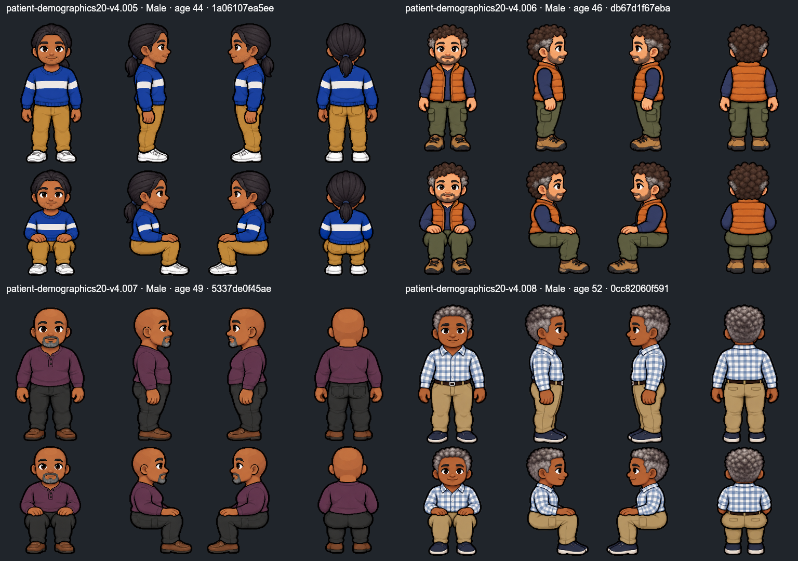
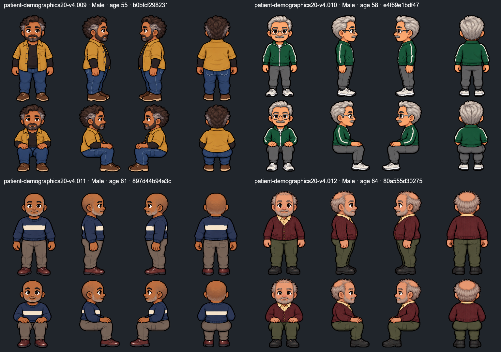
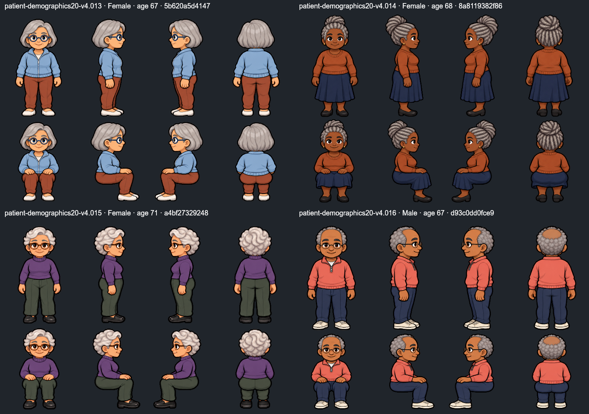
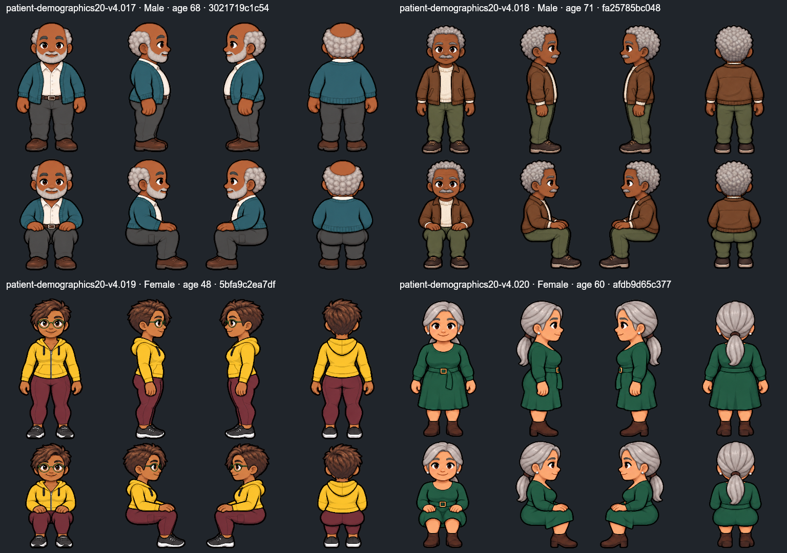

Labels sit outside the native sheets. This review resize preserves each full canvas and does not modify any source PNG.
001, 002, 003, 004 · open full board

005, 006, 007, 008 · open full board

009, 010, 011, 012 · open full board

013, 014, 015, 016 · open full board

017, 018, 019, 020 · open full board
